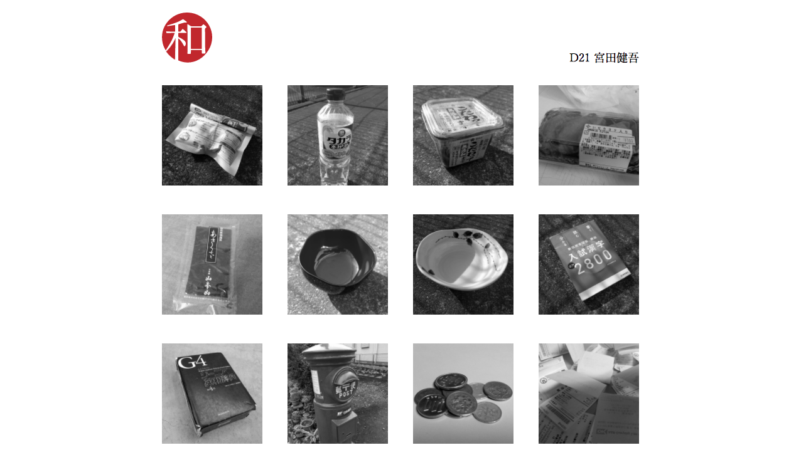

情報処理 授業課題
和
グリッドデザイン
「和」という漢字をテーマに写真を取りwebサイトを制作する課題です。使用する写真は正方形でモノクロで160pxという制約があり、この厳しい制約の中で美しくデザインする方法を考え、グリッドデザインを採用しました。cssのメディアクエリーを使ってレスポンシブにもしました。また、マウスオーバーでほのかに色づくようにして少しでもモノクロという制約から抜け出そうと意識しました。「和」のロゴは日の丸をイメージしてIllustratorで作りsvgで表示しています。
URL http://dipale.musabi.ac.jp/~di16086/ip1/ （学内サーバーのためログインが必要です）
制作ソフト Adobe Photoshop Adobe Illustrator sublimetext
使用技術 html5 css3 svg
製作期間 １週間